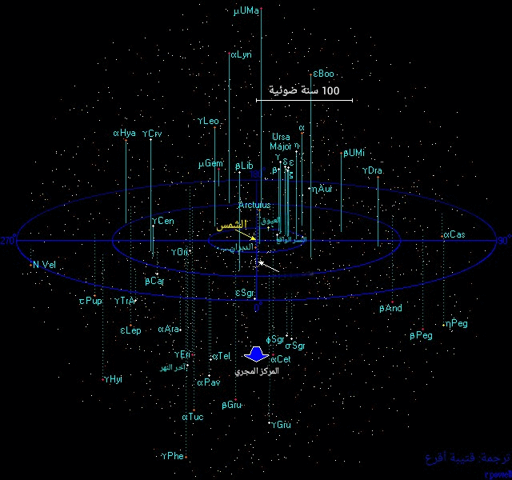
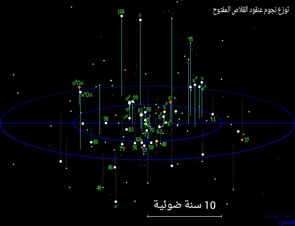

الكون على مقياس 250 سنة ضوئية
جوار المجموعة الشمسية
|

|

|

|
|
 عدد النجوم على مقياس 250 سنة ضوئية = 260 000
عدد النجوم على مقياس 250 سنة ضوئية = 260 000 |
حول هذه الخريطة
تظهر هذه الخريطة 1500 نجما من النجوم اللامعة على مقياس مسافة 250 سنة ضوئية.جميع هذه النجوم أكثر لمعانا من الشمس و معظمها مرئية بالعين المجردة. إن ثلث النجوم المرئية بالعين المجردة من الأرض تقع ضمن المقياس 250 سنة ضوئية.، و هي حقيقة جزء صغير من مجرتنا درب التبانة.
| خرائط إضافية |
|---|
|
هناك ما يزيد عن 133 نجما مرئيا بالمعين المجردة يتواجد في حيز المقياس 50 سنة ضوئية المحيط بنا. و في هذه الخريطة يمكننا رؤية جميع النجوم المعنية بالذكر. |
|
تحوي هذه الصفحة نماذج قابلة للطبع و يمكن لصقها و تجميعها لصناعة كرة سماوية ذات اطراف تبلغ ال 26 طرفا و تظهر فيها جميع النجوم المرئية بالعين المجردة في سماء الليل. |
| بيانات و مصنفات |
|---|
|
نجد هنا مخططا يظهر جميع أصناف النجوم مجتمعة و تظهر بعض المعلومات الأولية عن الحجم و الكتلة و درجة الحرارة ... إلخ. لجميع أصناف النجوم. |
|
معظم أصناف النجوم الرئيسية تمتلك موقعا لها ضمن مخطط Hertzsprung-Russell
diagram و هي بمثابة تمثيل بياني للعلاقة بين ضيائية النجم و لونه او درجة حرارته. |
|
نجد هنا لائحة بألمع 300 نجم و معلومات عن المسافة التي تقبع عندها هذه النجوم مأخوذة من مصنف هيباركوسHipparcos catalogue. |
|
نجد هنا جدوﻻ يضم أسماء النجوم التي اعتمدها الاتحاد الفلكي الدولي من قبل مجموعة العمل في الاتحاد WGSN IAU-CSN.
و تضم اسم 240 نجماً معظمها مرئية بالعين المجردة. تم إصدار هذه اللائحة بتاريخ 1/2/2017. |
عنقود القلاص النجمي
يعتبر عنقود القلاص النجمي من أقرب المجموعات النجمية العنقودية المعروفة لنا . و هو قريب بما يكفي لرؤيته بأبعاد ثلاثة. يعتبر عنقود القلاص من الأجرام اللامعة التي تتبع لكوكبة الثور، و لكن وجود نجم الدبران البرتقالي اللامع قد غطى على جمالية العنقود لوجوده أمام العنقود النجمي في منتصف المسافة بيننا و العنقود . يقع العنقود على مسافة 151 سنة ضوئية منا. و يعتقد أنه تشكل منذ 660 مليون سنة خلت. فيما دار حول المجرة ثلاث مرات منذ ذلك الوقت و كمثيلاته من العناقيد المفتوحة فإن مكوناته النجمية تتحرك مبتعدة عن بعضها الآخر.

عنقود القلاص المفتوح و اللامع في كوكبة الثور